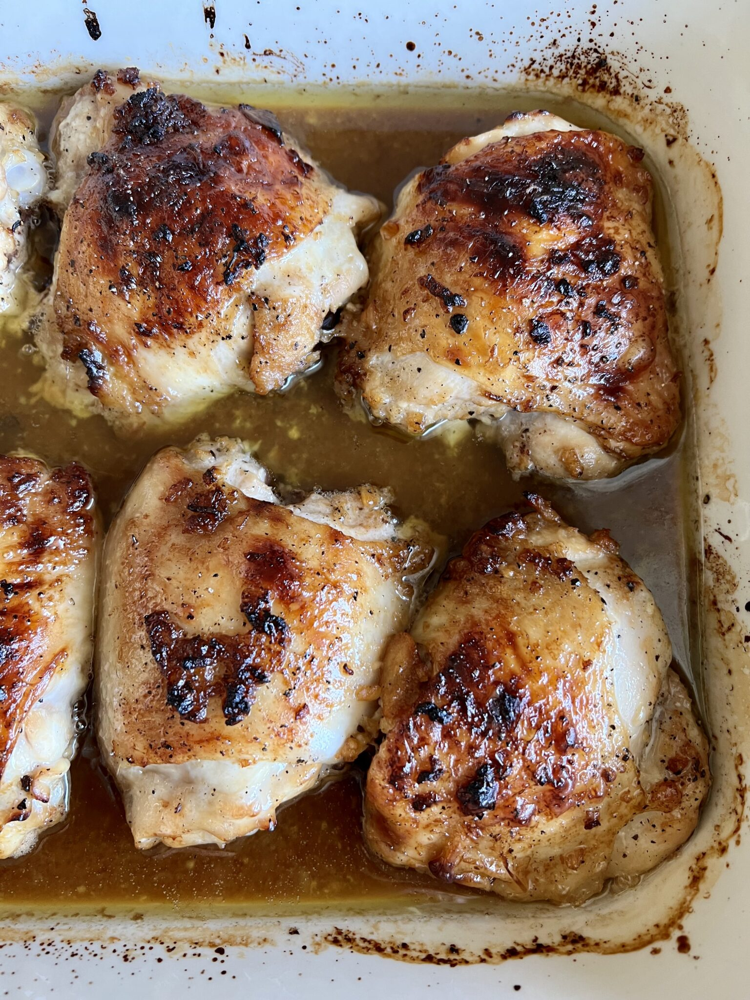

Killer Crack Chicken

They call it crack chicken for a reason.
Mmmm, chicken. But you know what's better? Marianted chicken with crack sauce! Guarantee you'll cook this over and over again.
Ingredients:
- 8 chicken thighs
- 2 tbs olive oil
- 1 tbs sesame oil
- 1/4 cup low sodium soy sauce
- 1 tbs worcestershire sauce
- 1 large lemon
- 5 tbs honey (or maple syrup)
- 7 garlic cloves, minced
- salt and pepper to taste
Steps:
- Pat chicken dry
- In a large bowl, add all ingredients to chicken. Toss and coat well. Cover and refrigerate for at least 2 hours.
- Preheat oven to 450F. Transfer chicken to a baking dish and pour over the marinade. Bake about 30-35 minutes. Baste chicken half way through.
- If you want them browned and crispy, turn on broiler for a few minutes. Serve and enjoy!
Back to home